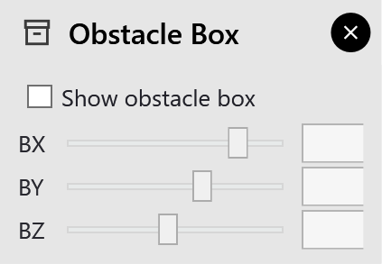
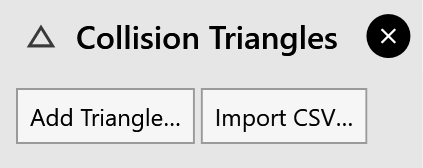

Obstacles
FRobot keeps the robot, the gripper and the carried part clear of everything in the cell:
-
every cell element;
-
the parts already put down;
-
the obstacle box, while it is shown;
-
the collision triangles;
-
STEP parts you import.
This page covers the last three, which you add for obstacles that are not cell elements.
The obstacle box
settings ▸ Obstacle Box opens its panel.

-
The box is a 200 mm cube. BX, BY and BZ set where its centre is.
-
Show obstacle box turns it on. It is an obstacle only while it is shown; it is drawn blue, and red when something hits it.
-
Saving: the box’s position is saved with the cell, but whether it is shown is not. A shown box stays shown, at the saved position, when you open another cell. After a restart it is off.
-
Planning: the phase strip re-checks the cycle when you move or show the box. To plan around the box, click recompute.
Collision triangles
Triangles mark flat obstacles: a guard, a wall, a sloping surface. settings ▸ Collision Triangles opens their panel.

Adding one
Add Triangle… opens the Add Collision Triangle dialog. Fill it in and click OK:
| Field | What it is |
|---|---|
Name |
The triangle’s name (needed) |
Group |
A group name, pre-filled Box; triangles of a group share a colour. Empty becomes Group1. |
P1, P2, P3 |
The three corners, each X, Y, Z in mm |
Export CSV in the dialog saves the triangle to a file.
Importing many
Import CSV… in the panel reads every row of a CSV file. Each row is one triangle:
Name,Group,P1X,P1Y,P1Z,P2X,P2Y,P2Z,P3X,P3Y,P3Z
A row with 10 columns (no group) is read into the group Box. A file with no usable row gives No valid triangle rows found.
Removing one
The panel lists each triangle with its group. Its × removes it.
|
Note
|
Collision triangles are not saved, neither with the cell nor with the solution. They stay in the 3D view, and keep counting as obstacles, in every cell and solution you open, until you remove them (×) or restart FRobot. Keep their CSV file to import them again. |
STEP parts as obstacles
A STEP model of a fixture or a finished part can stand in the cell as an obstacle:
-
settings ▸ Part ▸ Import Part…, or File ▸ Import ▸ STEP Geometry;
-
then set its place in Part Placement (6 DOF): PX, PY, PZ for the position and PRx, PRy, PRz for the rotation.
STEP parts are saved with the cell.
|
Note
|
A STEP part is only an obstacle; the robot never picks it. The part the robot handles always comes from a flat drawing (.dxf or .geo): see Importing the part. |
Coordinates of obstacles
The obstacle box, the triangles and the STEP parts are placed in FRobot’s scene coordinates, measured from the foot of the robot’s base, not from the controller’s world origin.
-
Z is higher by the height of the robot’s second axis: 400 mm on the LR10iA_10, 425 mm on the M20iD_25, 565 mm on the M710iD_50M and FanucX.
-
On the M20iD_25, X and Y are also turned by 90°.
Check the position in the 3D view. Station frames, by contrast, are always in the controller’s world coordinates.